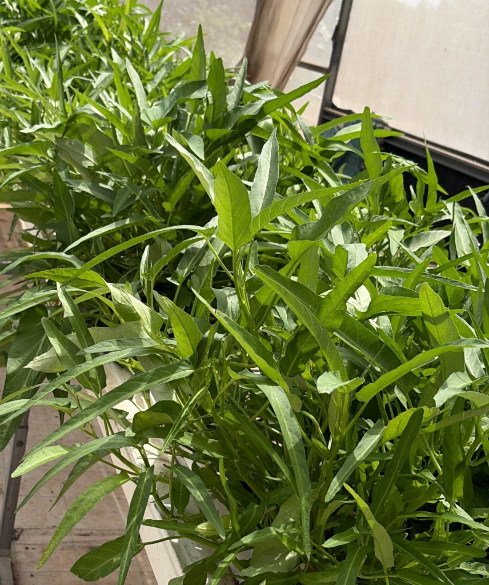

אודות — T8a
מיזוג · החלטות נמרוד 2026-06-23 · תמונות בסבב נפרד
Hero
שם: נימרוד ולד
כותרת: חקלאי, יועץ, מקודד.
Lede 1: שורש אחד, שלוש זרועות. חממה הידרופונית פעילה, ייעוץ לחוות קטנות ולפרויקטים קהילתיים, וסוכן AI לחקלאות קטנה שאני בונה — הכול מאותו מקום, מאותו אדם.
Lede 2: אני עובד בין אדמה, אנשים וקוד. לא כי אלה שלושה תחומים שונים שנאספו בדרך — כי עם השנים הבנתי שהם מבקשים את אותה מיומנות: לקרוא מערכת, להבין איפה היא תקועה, ולבנות לה גשר מספיק פשוט כדי שתתחיל לזוז.

זמני · מקור: placeholder רשת · יוחלף בצילום שדה/הדרכה מהארכיון (קו הרצליה / קורס גינון)
Meta (4)
- מיזו · מ-1999 · מולטימדיה, סטודיו, עיצוב אקולוגי
- הגינה · 2014–2023 · ~4 דונם בשיא · פרדס חנה
- היום באדמה · חממה 420 מ״ר · רוב לבית · חלק למסעדת המחתרת
- היום בדיגיטל · SFA חי · sfa.nimrod.bio
גלריה (5) — שלד + placeholder
✅ נעול: מיזוג v1. תמונות אמיתיות/רשת — סבב הבא.
- בשדה עם הצוות — עונה שעבדה (אדמה)
- מאחורי דלפק השוק — מהגינה של נמרוד (אדמה)
- מסביר לקבוצה — הידע לפני שהוא נכתב (ייעוץ)
- מבט רחב על החממה — 420 מ״ר (אדמה)
- יד באדמה, ברוקולי לילד — מה שמחבר (גשר)

דוגמת placeholder מקומי (#4) — לא סופי
§01 הסיפור
גדלתי בין שני עולמות שנראו מנוגדים. אבא — הנדסת מערכות. אמא — גידלה הכל. אותו דבר, חומר אחר.
למדתי הנדסה, כתבתי קוד — ובמקביל הסקרנות לאדמה. לא רומנטיקה — שאלה מקצועית: מה קורה כשמפסיקים לדבר על מערכת ומתחילים לגעת בה.
2014 — הגינה של נמרוד, פרדס חנה. תשע עונות, ~4 דונם, חנות, שווקים, סלים, תיעוד שבועי.
2023 — סגירה. גלגול. פשוט נסגרה. היה טוב וטוב שהיה. חממה, ייעוץ, SFA.
המצאה מחדש כל עשור — מבחוץ עזיבה, מבפנים אותו אדם.
✅ נעול: קישור להסיפור המלא של הגינה בטקסט: «רוצים את הפרק המלא? מורשת הגינה — תשע עונות בפרדס חנה.»
Pullquote — בחר (דוגמאות כפי שייראו בעמוד):
אופציה A — גשר בין דרכי חשיבה
כך למעשה הייתי גשר — לא בין תחומים, אלא בין דרכי חשיבה שאנשים חושבים שלא מתחברות.
אופציה B — אותה מערכת, חומר אחר
זו לא מטאפורה בשבילי. זו אותה מערכת, בחומר אחר.
אופציה C — A ב-§01 + B ב-§03 (עיקרון)
מפזרים את שני המשפטים — לא שניים באותו מקום.
אופציה D — B ב-§01 + «איך לשחרר» ב-§06 ים
לא איך להפליג. איך לשחרר.
טון סגירת הגינה — עקביות about ↔ heritage (שאלה 17):
נעול: וריאציה מותרת
באודות (משפט אחד): «פשוט נסגרה. היה טוב וטוב שהיה.»
במורשת (סקשן שלם): «פשוט נסגרה. גלגול חדש. היה טוב, וטוב שהיה.» + הסבר החלפת קנה מידה — בלי התנצלות.
§02 מסע (ציר זמן)
| 1999→ | ראה אופציות MeZoo ↓ | דיגיטל |
| 2014 | הגינה של נמרוד | אדמה |
| 2014–23 | תשע עונות · ~4 דונם | אדמה |
| 2023 | סגירה מתוכננת | גשר |
| 2024 | חממה 420 מ״ר | אדמה |
| 2026 | SFA · ייעוץ · BCS · מחתרת | דיגיטל·ייעוץ·אדמה |
שורת 1999 — איך לכתוב את הסטודיו? (שאלה 19 — בחר):
אופציה A — מיזו (עברית)
מיזו — מולטימדיה, סטודיו, עיצוב אקולוגי. עשרים-ומשהו שנות אפיון מערכות (היום: AOS).
אופציה B — MeZoo (מועדף נמרוד)
MeZoo — מולטימדיה, סטודיו, עיצוב אקולוגי. מ-1999. היום מתגלגל ל-AOS.
אופציה C — Mezoo (כמו הדומיין mezoo.co)
Mezoo — מולטימדיה ואפיון מערכות מ-1999.
אופציה D — MeZoo בעברית + סוגריים
מיזו (MeZoo) — מולטימדיה, עיצוב אקולוגי, מערכות.
§03 העיקרון
כותרת: אותה מערכת, חומר אחר
חממה: איפה המים עומדים, איפה הקצב לא תואם — תיקון קטן, לא "יותר".
קוד: כפילות, תיעוד, זרימה. ייעוץ: קודם השטח — אנשים, מים, שמש — אחר כך הכלי.
גשר בין עולמות בלי למחוק הבדלים. שלוש זרועות — אותו דפוס.
§04 איך אני עובד
- Evidence-based — מה שיש, לא מה שתדמיין.
- תיעוד — בלי רישום אין מסקנה.
- הקישוריות — הייחוד בגשרים, לא בענפים.
§05 בתקשורת
מצב באתרים קיימים: באתר החדש (dev) והמוקאפ — §05 מוסתר במכוון. אין כרגע ראיונות עם URL מאומתים.
שלד לעתיד (לא לפרסם בלי אימות):
- [דרוש השלמה] כותרת כתבה / שם outlet
- [דרוש השלמה] תאריך + קישור
- [דרוש השלמה] ציטוט קצר (אופציונלי)
בהטמעה: להציג הסקציה עם באנר «בהשלמה» — לא «TBC» ציבורי ולא כרטיסים ריקים.
§06 קצת ים
רישיון סקיפר. מנוע מתקלקל, תוכנית משתבשת — מערכת גדולה ממך.
לא איך להפליג — איך לשחרר. אותו שיעור בגינה, בקוד, בחממה.

placeholder רשת — סבב תמונות נפרד
Contact teaser
דבר איתי — שיחה ראשונה, ללא התחייבות. 30 דקות.
CTA: בואו נדבר → /contact/ · בד״כ תוך 48 שעות.